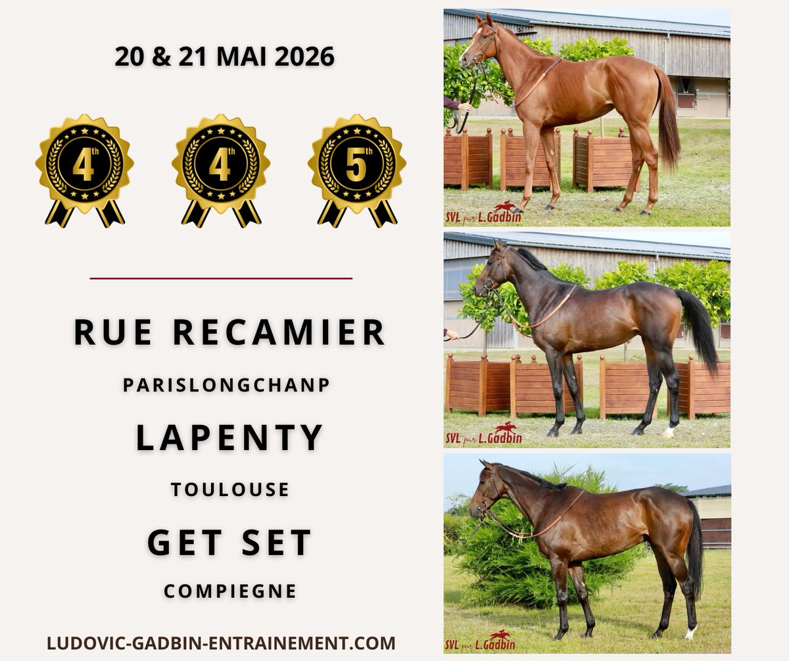

Ludovic Gadbin confía en el debut de Rue Récamier y en las opciones de Mister George
El preparador francés presenta dos caballos este jueves en el hipódromo de ParisLongchamp, con expectativas diferenciadas: la yegua afronta su reaparición en condiciones favorables mientras el segundo defiende su progresión tras imponerse en Saint-Cloud.

Foto: pbs.twimg.com
Ludovic Gadbin afronta la jornada de este jueves en ParisLongchamp con una doble representación encabezada por Rue Récamier, que regresa a las pistas con un perfil favorable según su entrenador. La yegua disputa una carrera con campo reducido y un peso que el preparador considera accesible, circunstancias que aprovecha tras completar su preparación invernal. El terreno previsto y la distancia programada se ajustan a sus características, lo que alimenta las expectativas de una actuación competitiva desde su primer compromiso de la temporada.
Mister George, por su parte, llega al Quinté+ en un momento de forma ascendente tras su reciente victoria en Saint-Cloud. El preparador destaca la evolución física del ejemplar y su estado actual, aunque lamenta el sorteo del cajón 16 en la cuerda, condición que históricamente complica los debuts en carreras de referencia. Gadbin considera que el caballo necesita recorrido cubierto para desplegar su capacidad de aceleración, factor que condiciona su rendimiento pese al peso asignado. Con todo, confía en que pueda desarrollar una carrera sólida si las circunstancias tácticas le permiten expresar su progresión reciente.
— Redacción de Galope al Día